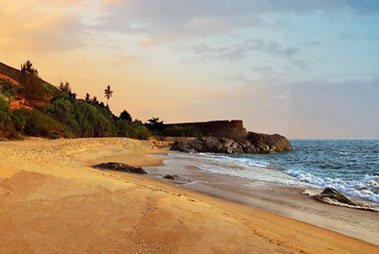
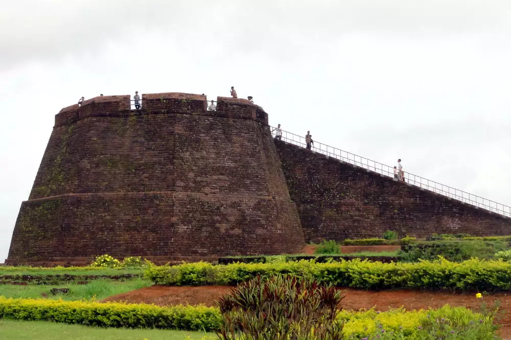
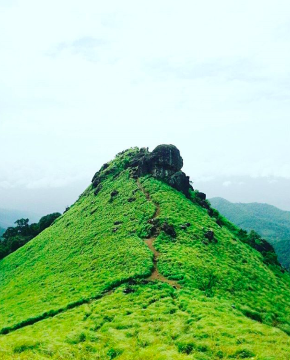
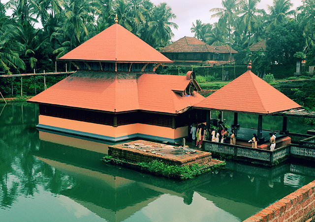
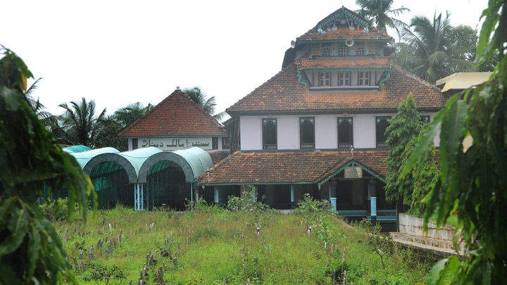
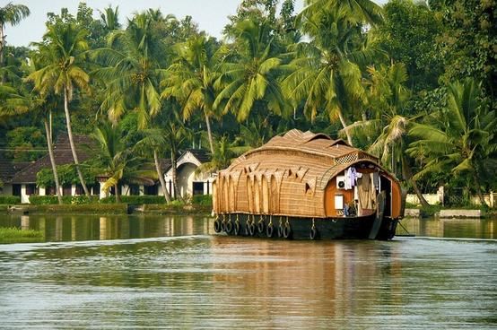

BEKAL BEACH
There are many factors that have added to the popularity of the site. An observation tower fitted with beautiful peepholes, the Anjaneya Temple with its famous masonry and two Theyyam sculptures built from laterite are among the primary attractions. An ancient mosque built by Tipu Sultan and various underground passageways are also important places in the area. A rock garden was built using laterite in the parking area and is an architectural marvel in itself. Trees have been planted on the beach along with the construction of a splendid walkway which makes it easier to traverse the beach and enjoy its sights

BEKAL FORT
Around 16 km to the south of northernmost district in Kerala, Kasaragod, lies the massive Bekal Fort. It is among the biggest forts in Kerala and has been impeccably maintained throughout the years. It rises to 130 feet above sea level and is situated on a headland spanning 35km. Much effort has been put to develop a beautiful beach here called the Bekal Fort Beach. People flock to these spots in great numbers. Situated comfortably on steep hills by the sea, the fort provides for an imposing view from the beach. Built using laterite slabs and with a polygonal shape, it is amongst the most visited sites in Kerala.

RANIPURAM PEAK
Ranipuram is a renowned tourist destination in the northern tip of Kerala. Located in Kasaragod, it is situated 750 m above sea level. It makes for a perfect picnic spot where one can even come across the occasional herd of elephants. Once known as Madathumala, it borders Karnataka and boasts of some of the best trekking trails in the area. Regular buses are available on this route and jeep rides are another favourite among all our visitors. The versatile vegetation that includes evergreen shola woods, monsoon forests and grasslands make it a good place to relax and take some time off from the rigors of daily life.

ANATHAPURAM LAKE TEMPLE
In the northern tip of Kerala lies the Ananthapura Lake Temple, the only lake temple in Kerala. The rectangular lake, supplied with regular spring water, hosts this magnificent temple. It is considered the moolasthanam (original abode) of Lord Ananthapadmanabha, the deity of the famous Sree Padmanabhaswamy Temple in Thiruvananthapuram. This 9th-century temple situated 30 km from Bekal in Kasaragod district. The view of the hillocks from the temple is extremely famous. Babia, the vegetarian crocodile and temple guardian, is popular among all the visitors. The drive to the temple in itself is extremely peaceful and calming.

MALIK DINAR MOSQUE
Built in the typical Kerala style architecture, the Malik Deenar Mosque or Malik Dinar Mosque is believed to have been founded by Malik Ibn Dinar, who is credited with the propagation of Islam in Kerala. Located at Thalankara, the Juma Masjid or Mosque is one of the best kept and most attractive in Kasaragod. Intricate carvings in Arabic can be seen on the wooden beams and pillars of the mosque. The mosque details its history of construction in Arabic on the latticed woodwork.

NILESHWAR HOUSE BOATING
About Houseboat Services at Nileshwar, Kasaragod : Boating on the backwaters of Kasargod is surely an experience of a lifetime. Houseboats (rice boat), which are traditionally known as Kettuvallam now are an extremely popular tourist attraction. These were actually country boats used for transportation of goods from the remote villages to the towns. The transfer of heavy cargo used to become quite easy in this manner. Slowly, they became a redundant means after construction of roads. However, if today a tourist comes to Kasargod, his main attraction are the houseboats of Kasargod to explore the beauty of the place. Enjoy a ride in these houseboats, also refereed to as Kuvuvalloms, during your vacations to the northernmost district of Kerala.